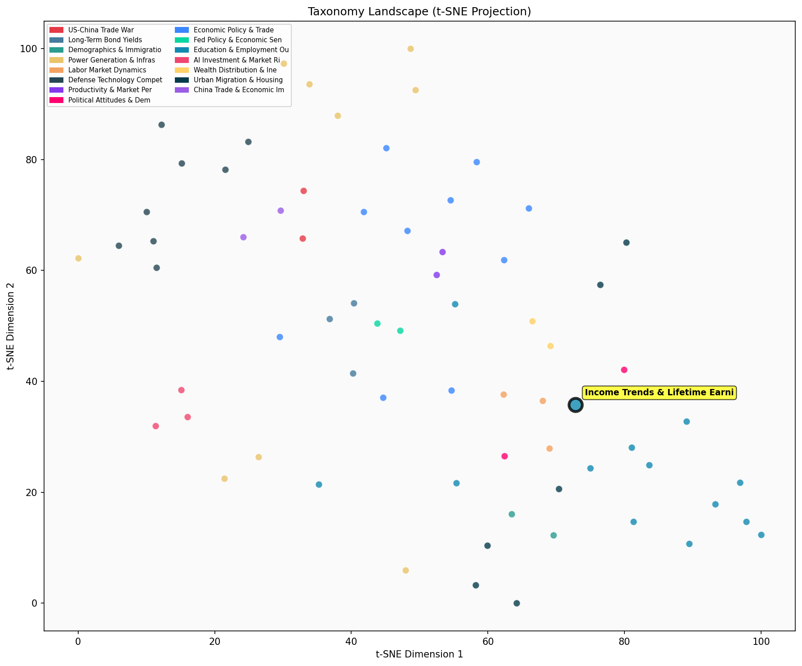

Description
This subcluster examines long-term earnings trajectories and income distribution patterns across demographic groups and time periods. Articles analyze wage trends spanning decades, focusing on how earnings evolve over workers' careers and lifetimes rather than single-point measurements. Common themes include prime-age earnings patterns, peak earning ages, income quintile mobility, and generational wealth accumulation. Data sources typically draw from longitudinal datasets like Federal Reserve surveys and Bureau of Labor Statistics records. Unlike sibling clusters examining educational attainment gaps or academic performance metrics, this subcluster emphasizes economic outcomes over time, tracking how income patterns shift across age cohorts and socioeconomic strata throughout working careers.
Similarity to All 70 Subclusters
Each cell represents a subcluster. Color intensity shows similarity (blue=low, red=high). Black line marks current subcluster position.
Relationship to Primary Clusters
Average similarity to each of the 15 primary clusters. Larger area = stronger relationship to that cluster.
Taxonomy Landscape
All 70 subclusters positioned by similarity (t-SNE). Current subcluster highlighted with label. Click to enlarge.
Network Connections
Current subcluster at center, connected to related subclusters. Line thickness = similarity strength.
Most Representative Articles
-
1. Higher income workers increased hours worked from 1965 to 2005, while lower income workers saw an in
-
2. @KatherineGuyot ~90% of middle-class income growth btw 1979-2018 driven by higher female wages & hou
-
3. Lifetime incomes in the US over six decades show that wider dispersion of 25-year-old incomes is the
-
4. Between 1979 and 2022 prime-age men in the bottom quintile saw their inflation-adjusted market incom
-
5. @ShayleeWheeler The data on household total hours worked by income quintile reveals significant disp
Edge Cases (Boundary Articles)
-
1. .@swinshi argues that the changes in family formation have not been driven by changes in men's relatThis article is borderline because while it discusses men's earnings trends over time (1979-2021), which fits the income patterns theme, its primary focus is on how these earnings relate to marriage and family formation rather than analyzing the earnings trajectories themselves. The content is more aligned with examining gender-specific economic factors affecting marriage outcomes, which explains why it shows higher similarity to the "Gender Gaps in Education & Marriage Outcomes" cluster.
-
2. Work hours increase with income inequality, with greater inequality predicting longer work hours, acThis article is borderline because while it touches on income inequality (relevant to income distribution patterns), its primary focus is on the relationship between inequality and work hours rather than examining actual earnings trajectories or income trends over time. The content is more about behavioral responses to inequality rather than the core income and earnings pattern analysis that defines this cluster.
-
3. .@swinshi @AEIecon finds faults with @oren_cass analysis and argues that it has become easier for aThis article is borderline because while it mentions analysis of male earners' ability to support families compared to 1985 (which relates to income trends over time), it's just a brief social media post referencing a debate rather than substantive analysis of earnings patterns or income distribution data that would be typical for this cluster.
Original Dendrogram